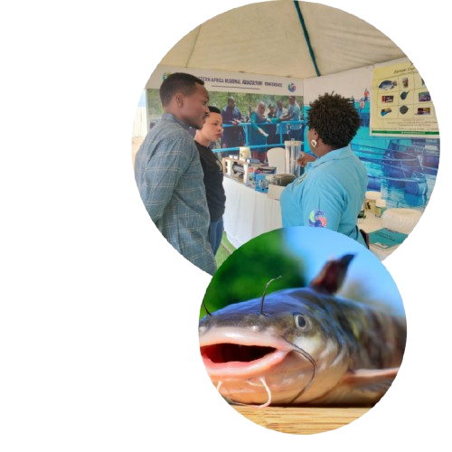

Samaki express!
Promoting the growth of aquaculture
Welcome to samaki express,East africa's number one aquaculture solutions.

Welcome to samaki express,East africa's number one aquaculture solutions.
Samaki Express was founded in 2014 by Arnoud Meijberg and Janeffer Nafula with a vision to transform aquaculture in East Africa. The journey began with a single branch at KALRO in Nairobi, specializing in fish feed imported from Israel. Over time, the business expanded, opening branches in Kiambu, Kisumu, and Kampala. Today, the Nairobi and Kiambu branches remain operational, serving as hubs for the company’s growth and innovation. Samaki Express has diversified its offerings to include fisheries equipment, fresh fish, and aquaculture consultancy services. With a strong presence across East Africa, the company has made significant strides in providing quality products and expert services. Looking ahead, Samaki Express envisions expanding its reach to the rest of Africa and ultimately the global market, continuing its mission to revolutionize aquaculture for a sustainable future.